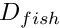
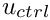
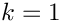
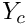
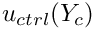
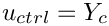
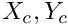
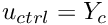
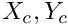
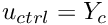

In this example we shall consider our first (toy!) interaction problem. The problem combines two single-physics problems, studied in earlier examples, and combines them into a coupled free-boundary problem.
- In one of our first examples we demonstrated the solution of Poisson's equation in a fish-shaped domain, , in which the curvilinear upper and lower boundaries of the fish's body were given by circular arcs which we represented by
GeomObjects. Given the position of the two circular arcs, whose centres are located at , the single-physics Poisson code computes the solution of Poisson's equation in the corresponding domain.
We have already demonstrated howoomph-lib'sMacroElement/Domainrepresentation of allows an update of the nodal positions in response to changes in the domain boundary by a simple call toMesh::node_update(). The example code therefore allowed us to compute the solution at a control node, , as a function of the "height" of the domain, characterised by .
- In another example, we demonstrated how to solve a (trivial) solid mechanics problem: The vertical displacement of a circular ring (represented by a
GeomObject) that is mounted on an elastic foundation of spring stiffness . The example code allowed us to compute the displacement of the ring, characterised by , as a function of the load  acting on it.
We will now consider the coupled problem obtained by using the solution of Poisson's equation at the control node,  , as the "load", , that acts on the two circular arcs that define the curvilinear boundaries of . The resulting coupled problem is sketched in the figure below. While this problem is obviously somewhat artificial, it has many of the key features that arise in genuine fluid-structure interaction problems. In particular, the displacement of the domain boundary is driven by the solution of the "bulk" (Poisson) equations, just as the deformation of an elastic structure in an FSI problem is driven by the fluid pressure and shear stresses, i.e. quantities that are derived from the solution of the Navier-Stokes equations in the "bulk" domain.
, as the "load", , that acts on the two circular arcs that define the curvilinear boundaries of . The resulting coupled problem is sketched in the figure below. While this problem is obviously somewhat artificial, it has many of the key features that arise in genuine fluid-structure interaction problems. In particular, the displacement of the domain boundary is driven by the solution of the "bulk" (Poisson) equations, just as the deformation of an elastic structure in an FSI problem is driven by the fluid pressure and shear stresses, i.e. quantities that are derived from the solution of the Navier-Stokes equations in the "bulk" domain.

The two single-physics problems involve two uncoupled sets of equations and unknowns:
- The residual vector of the Poisson elements in the single-physics Poisson problem depends on the nodal values in the "bulk" mesh. These nodal values are the only unknowns in the problem since the position of the domain boundary, and hence the position of the nodes are fixed. An update of the nodal positions in response to any changes in the domain boundary is a mere pre-processing step, to be performed just once, before computing the solution.
- The residual vector of the
ElasticallySupportedRingElementdepends on the position of ring's centre, , which is the only unknown in the problem as the load on the ring is fixed.
The coupling between the two single-physics problem introduces additional dependencies:
- The residuals of the Poisson elements also depend on the nodal positions which in turn depend (via the
MacroElement/Domain- based node-update function) on the the position of the domain boundary. The boundary position is controlled by theElasticallySupportedRingElement'sgeometricData, which stores the value of . - The residual vector of the
ElasticallySupportedRingElementalso depends on the load, which is now given by the unknown nodal value at a control node in the "bulk" mesh.
We note that most of the methodology required to solve this coupled problem is already available:
- The
MacroElement/Domainrepresentation of the Mesh makes it possible to update the nodal positions in the bulk mesh in response to changes in the shape/position of the curvilinear domain boundary. - Multiple inheritance allows the
ElasticallySupportedRingElementto act as aGeomObject(a role in which it can be used to parametrise the unknown curvilinear domain boundary) and as aGeneralisedElement(a role in which its unknown geometricDatavalue, , can be determined as part of the overall solution). - The load on the
ElasticallySupportedRingElementis stored in the element's externalData, and derivatives of the element's residual vector with respect to are automatically taken into account when the element's Jacobian matrix is computed.
The only interaction that still has to be incorporated into the problem formulation is the dependence of the Poisson element's residual vectors on the geometric Data in the ElasticallySupportedRingElement. This interaction arises through the MacroElement/Domain - based node-update function which translates changes in the GeomObject's geometric Data into changes in the nodal positions. Such dependencies may be added to any existing element by "wrapping" the element into the templated wrapper class MacroElementNodeUpdateElement which has the following inheritance structure:
An element of type MacroElementNodeUpdateElement<ELEMENT> is an element of type ELEMENT, and inherits the additional functionality provided by the MacroElementNodeUpdateElementBase base class. The most important additional functionality provided by this class is the ability to add the values stored in the geometric Data of associated GeomObjects to the element's list of unknowns. Once added, the derivatives of the element's residual vector with respect to these additional unknowns are automatically included into the element's Jacobian matrix. This is achieved by overloading the ELEMENT::get_jacobian(...) function and evaluating the additional derivatives by finite differencing. See Comments for details on the implementation.
The solution of the coupled problem therefore only requires a few trivial changes to the single-physics (Poisson) code:
- The element type used for the solution of the "bulk" equations must be changed to its "wrapped" counterpart, as discussed above. For instance, if the single-physics code used a nine-node refineable Poisson element of type
RefineableQPoissonElement<2,3>, the coupled problem must be discretised by elements of typeMacroElementNodeUpdateElement<RefineableQPoissonElement<2,3>> (Yes, it's a bit of a mouthful...). - The "bulk" mesh must be "upgraded" (again via multiple inheritance) to a Mesh that is derived from the
MacroElementNodeUpdateMeshbase class. - A vector of pointers to those
GeomObjectsthat are involved in an element'sMacroElement/Domain- based node update operation must be passed to the elements. (This is done most easily in the constructor of the "upgraded" mesh.) The geometricDatacontained in theseGeomObjectsis then automatically included in the elements' list of unknowns. - The Mesh's
node_update()function must be executed whenever the Newton method has changed the values of the unknowns: This is because changing a value that is stored in aGeomObject'sgeometricDatadoes not automatically update the positions of any dependent nodes. This is done most easily be including thenode_update()function into theProblem::actions_before_newton_convergence_check()function; we refer to another document for a more detailed discussion of the order in which the various "action" functions are called byoomph-lib'sNewton solver.
Results
The animation below shows the results of a spatially-adaptive solution of Poisson's equations in the fish-shaped domain, for a variety of domain "heights". This animation was produced with the single-physics Poisson solver discussed in an earlier example.
An increase in the height of the domain increases the amplitude of the solution. This is reflected by the red line in the figure below which shows a plot of as a function of . The green marker shows the solution of the coupled problem for a spring stiffness of  . For this value of the spring stiffness, the solution of the coupled problem should be (and indeed is) located at the intersection of the curve  with the diagonal, , shown by the dashed blue line.
. For this value of the spring stiffness, the solution of the coupled problem should be (and indeed is) located at the intersection of the curve  with the diagonal, , shown by the dashed blue line.

Implementation in oomph-lib
The sections below provide the usual annotated listing of the driver code. We stress that only a few trivial changes are required to incorporate the presence of the free boundary into the existing single-physics code:
- The Mesh : Upgrading the
RefineableFishMeshvia multiple inheritance. - The driver code : Changing the element type for the solution of the Poisson equation.
- The Problem constructor : Storing the element that represents the free boundary in a (sub-)mesh.
- The problem class : Implementing the function
Problem::actions_before_newton_convergence_check()to update the nodal positions after each Newton step.
Global parameters and functions
The namespace ConstSourceForPoisson defines the constant source function, exactly as in the corresponding single-physics code.
The Mesh
Meshes that are to be used with MacroElementNodeUpdateElements should be derived (typically by multiple inheritance) from the
MacroElementNodeUpdateMesh class. This class overloads the generic Mesh::node_update() function and ensures that the node update is performed by calling the node_update() function of the Mesh's constituent nodes, rather than simply updating their positions, using the FiniteElement::get_x(...) function. The overloaded version is not only more efficient but also ensures that any auxiliary node update functions (e.g. functions that update the no-slip condition on a moving fluid node on a solid boundary) are performed too.
In our driver code we add the additional functionality provided by the MacroElementNodeUpdateMesh class to the RefineableFishMesh class used in the single-physics Poisson problem considered earlier.
The constructor calls the constructors of the underlying RefineableFishMesh. [Note the explicit call to the FishMesh constructor prior to calling the constructor of the RefineableFishMesh. Without this call, only the default (argument-free) constructor of the FishMesh would be called! Consult your favourite C++ book to check on constructors for derived classes if you don't understand this. We recommend Daoqi Yang's brilliant book C++ and Object-Oriented Numeric Computing for Scientists and Engineers.)
To activate the MacroElementNodeUpdateElement's ability to automatically compute the derivatives of the residual vectors with respect to the geometric Data that determines its nodal positions, we must pass the pointers to the GeomObjects that are involved in the element's MacroElement - based node-update to the elements. In general, an element's node-update will be affected by multiple GeomObjects therefore the set_node_update_info(...) function expects a vector of pointers to GeomObjects. In the present example, only a single GeomObject (the GeomObject that represents the fish's curved "back") determines the nodal position of all elements:
The destructor can remain empty but we provide a final overload for the Mesh's node_update() function to avoid any ambiguities as to which one is to be used.
The driver code
The driver code is very simple: We build the problem with the "wrapped" version of the refineable quadrilateral nine-node Poisson element. Since the initial mesh is very coarse we perform two uniform mesh refinements before solving the problem with automatic spatial adaptivity, allowing for up to two further mesh adaptations.
The problem class
Apart from a few trivial additions, the problem class is virtually identical to that used in the single-physics Poisson problem. The most important addition to the single-physics problem class is the function Problem::actions_before_newton_convergence_check() which updates the nodal positions in the "bulk" Poisson mesh following an update of the geometric Data that controls the position of the curvilinear domain boundary; we refer to another document for a more detailed discussion of the order in which the various "action" functions are called by oomph-lib's Newton solver.
The Problem constructor
We start by creating the GeomObject/GeneralisedElement that will represent the unknown curvilinear domain boundary and pass it (in its role as a GeomObject) to the constructor of the bulk mesh. We then add the pointer to the bulk mesh to the Problem's collection of submeshes and create an error estimator for the adaptive solution of the Poisson equation.
Next we store the pointer to the ElasticallySupportedRingElement in its own Mesh and add it to the Problem's collection of submeshes before building the Problem's global Mesh from its two submeshes:
We choose the central node in the Poisson mesh as the control node and use it (in its role as Data) as the "load" for the ElasticallySupportedRingElement.
Finally, we pin the nodal values on all boundaries, apply the homogeneous Dirichlet boundary conditions, pass the pointer to the source function to the elements, and set up the equation numbering scheme.
Post-processing
The post-processing routine writes the computed result to an output file.
Comments
A more detailed description of the theory and the implementation can be found in the paper
- Heil, M. & Hazel, A. L. "<TT>oomph-lib</TT> – An <EM>O</EM>bject-<EM>O</EM>riented <EM>M</EM>ulti-<EM>Ph</EM>ysics Finite-Element <EM>Lib</EM>rary". In: Fluid-Structure Interaction, Editors: M. Schafer and H.-J. Bungartz. Springer (Lecture Notes on Computational Science and Engineering 53, 2006), (32 pages) (abstract) (pdf preprint).
and in this talk:
- Heil, M. & Hazel, A. L. "An object-oriented approach to the evaluation of the ‘shape derivatives’ in monolithic fluid-structure interaction solvers". 7th World Congress on Computational Mechanics, LA, July 2006. (pdf).
The following subsections provide a brief description of the main features.
Sparse node updates
The key feature of our implementation which allows the efficient computation of the "shape derivatives" is the ability of MacroElementNodeUpdateNodes (discussed in more detail below) to "update their own position" in response to changes in shape/position of the domain boundary. This capability is demonstrated in the following simple example code.
We start by building the Mesh as before
and document the mesh (i.e. the shape of its constituent finite elements and the nodal positions):
Next, we "manually" increment , i.e. the y-coordinate of the centre of the circular arc that defines the upper curvilinear boundary of the fish mesh.
This step mimics the incrementation of one of the Problems's unknowns (recall that in the free-boundary problem considered above, has to be determined as part of the solution!) during the finite-difference based computation of the shape derivatives.
For meshes that are not derived from the MacroElementNodeUpdateMeshBase class, the only way to update the nodal positions in response to a change in the boundary position, is to call the Mesh::node_update() function. This updates the position of all nodes in the mesh – a very costly operation.
Meshes that are derived from the MacroElementNodeUpdateMeshBase class contain MacroElementNodeUpdateNodes which can update their own position, as shown here:
We note that the Node::node_update() function is defined as an empty virtual function in the Node base class, indicating that "normal" Nodes cannot "update their own position". The function is overloaded in the MacroElementNodeUpdateNode class, details of which are given below. Overloaded versions of this function also exist in various other derived Node classes (such as as the AlgebraicNodes and the SpineNodes) for which algebraic node update operations are defined.
Here is an animation that illustrates how the successive update of the individual nodal positions in response to the change in the boundary position gradually updates the entire mesh.

How it works
The implementation employs three key components:
MacroElementNodeUpdateNodesare derived from theNodebase class. Their main purpose is to provide theMacroElementNodeUpdateNodes::node_update()function which updates the nodal position in response to changes in the domain boundary. This capability was demonstrated above and is achieved by allowing theMacroElementNodeUpdateNodesto store a pointer to theMacroElementNodeUpdateElementthat determines its position (using its ownMacroElement- based representation) and its local coordinates in that element.
MacroElementNodeUpdateNodesalso store a function pointer to an auxiliary node update function that allows additional tasks to be performed whenever a node update is performed. This is useful, e.g. in unsteady fluid-structure interaction problems in which a change in the position of nodes that are located on a no-slip boundary also requires an update of the fluid velocities at that node. By default, the function pointer is initialised to NULL, indicating that no auxiliary node update functions have to be executed.
Finally, theMacroElementNodeUpdateNodesstore pointers to theGeomObjectsthat affect their node update. While this information is not required by the node update function itself, it must be available to correctly set up the equation numbering scheme in the presence of hanging nodes. (Details are too messy to explain here but it's true!).
- The
MacroElementNodeUpdateElement<ELEMENT>class was already discussed in the main part of this document. These elements "wrap around" the element specified by the template argument,ELEMENT, overload some of its member functions and add some new ones.
Overloaded functions include:
- The
FiniteElement::construct_node(...)functions create an element's localNodes. This is overloaded by a version that createsMacroElementNodeUpdateNodesinstead.
- The functions
GeneralisedElement::get_jacobian(...)andGeneralisedElement::fill_in_contribution_to_jacobian(...)are overloaded by versions that add the shape derivatives to the Jacobian matrices computed by the underlying ELEMENT.
- Similarly, the function
FiniteElement::assign_all_generic_local_eqn_numbers()is overloaded to add the unknowns associated with the node update functions into the element's equation numbering scheme.
GeomObjectsthat affect an element'sMacroElement- based node update. Full details may be found in the "bottom up" discussion ofoomph-lib'sdata structure.
- The
- Finally, the
MacroElementNodeUpdateMeshBaseclass overloads theMesh::node_update()function to ensure that node updates are performed node-by-node, using theMacroElementNodeUpdateNode::node_update()function. This ensures that the node update not only updates the nodal positions but also executes any auxiliary update functions.
The method also works for non-"toy" problems!
The above example demonstrated how easy it is to "upgrade" a driver code for the solution of a single-physics problem to a fluid-structure-interaction-like free-boundary problem. It is important to stress that the methodology employed in our "toy" free-boundary problem can also be used for genuine fluid-structure interaction problems. For instance, the driver code for the simulation of 2D unsteady finite-Reynolds number flow in a channel with an oscillating wall whose motion is prescribed can easily be extended to a driver code for the corresponding fluid-structure interaction problem in which the wall is replaced by a flexible membrane that is loaded by the fluid traction.
Source files for this tutorial
- The source files for this tutorial are located in the directory:
demo_drivers/interaction/free_boundary_poisson/
- The driver code is:
demo_drivers/interaction/free_boundary_poisson/macro_element_free_boundary_poisson.cc
PDF file
A pdf version of this document is available.